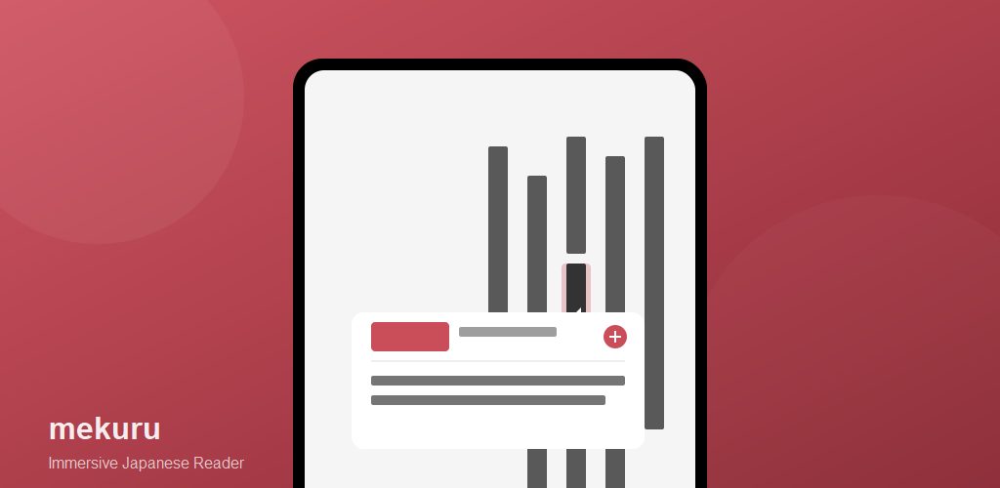
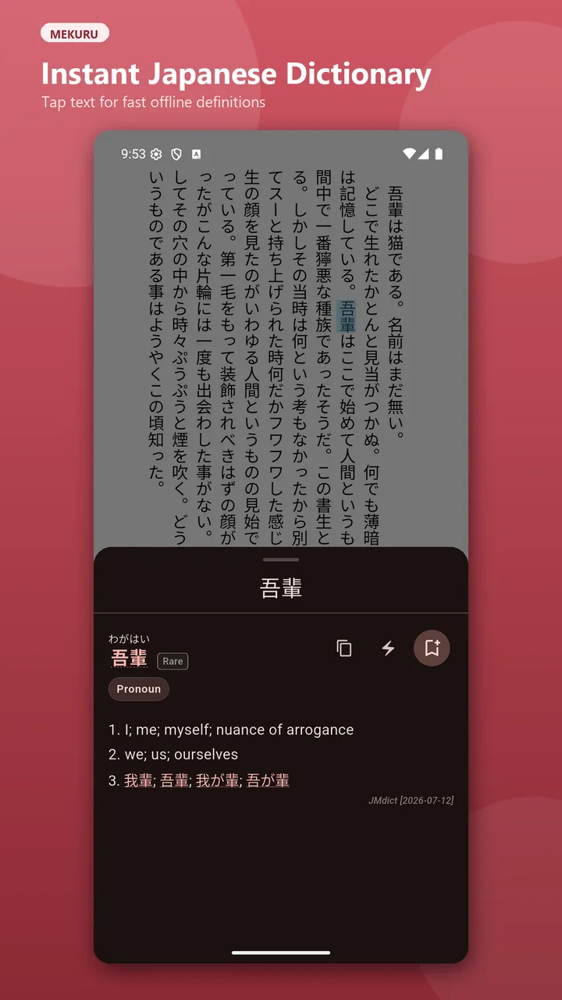
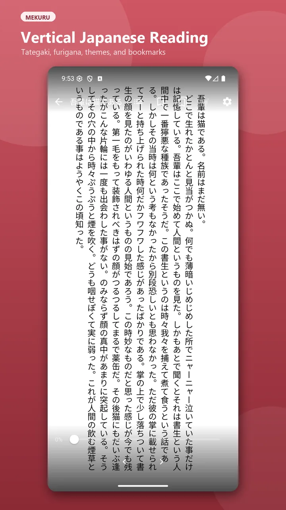
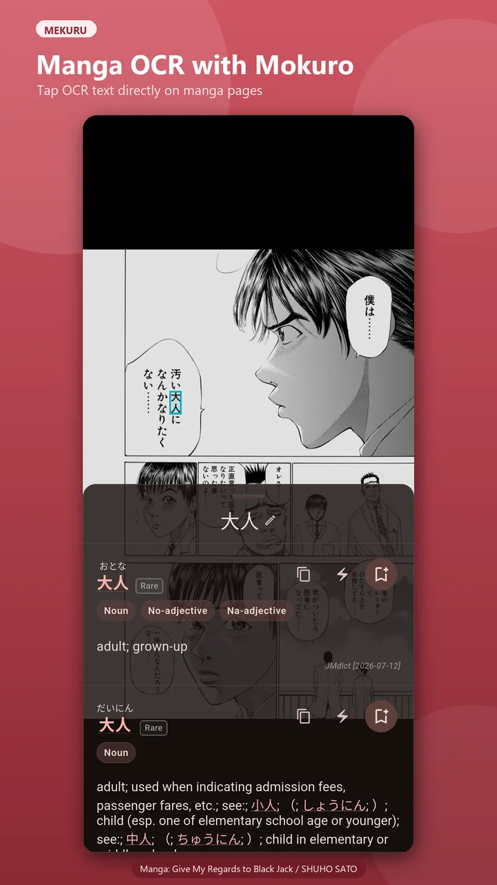
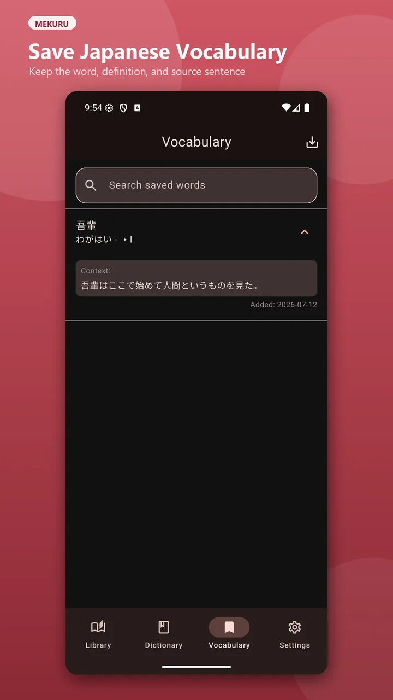

Japanese EPUB Reader
Read vertical or horizontal text with right-to-left or left-to-right page flow, bookmarks, themes, and automatic progress restore.
Read vertically, tap Japanese words for instant offline definitions, save vocabulary, and export it to AnkiDroid.

Built for reading Japanese
Mekuru combines Japanese-first reading layouts with offline dictionaries and vocabulary capture. Your EPUB books, manga, dictionaries, and reading progress stay together in one focused reader.
See Mekuru in action




One Japanese reading workflow
Read vertical or horizontal text with right-to-left or left-to-right page flow, bookmarks, themes, and automatic progress restore.
Import CBZ archives or Mokuro-processed manga with single-page, spread, and vertical-scroll modes.
Import Yomitan-compatible dictionaries or download JMdict, KANJIDIC, KanjiVG, and JPDB frequency data.
Tap text for compound-word detection, conjugation-aware definitions, pitch accents, frequency data, and kanji details.
Save words with sentence context, export CSV files, or send flashcards directly to AnkiDroid.
Use the core reader for free. The source is available under AGPL-3.0, with an optional one-time Pro upgrade.
Less fumbling, more reading